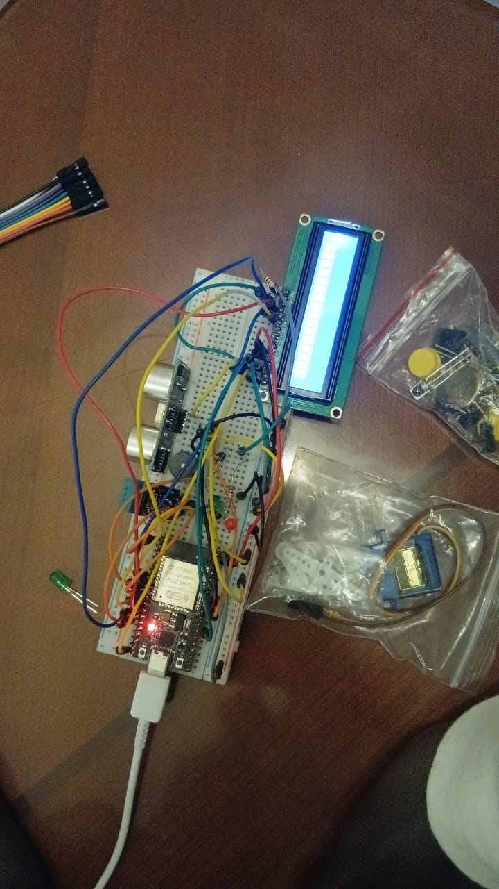

Poubelle Intelligente Connectée
Système IoT automatisant l’ouverture d’une poubelle via capteur ultrason à 5cm. Affichage d’état sur LCD I2C avec LED témoin et remontée des données température/humidité sur interface web hébergée par l’ESP32.
Mon rôle : Développement du code C++ Arduino, intégration du serveur web embarqué et tests des capteurs ultrason, DHT11 et LCD.
Technologies :
C++ Arduino
ESP32
HTML/CSS
DHT11
LCD I2C